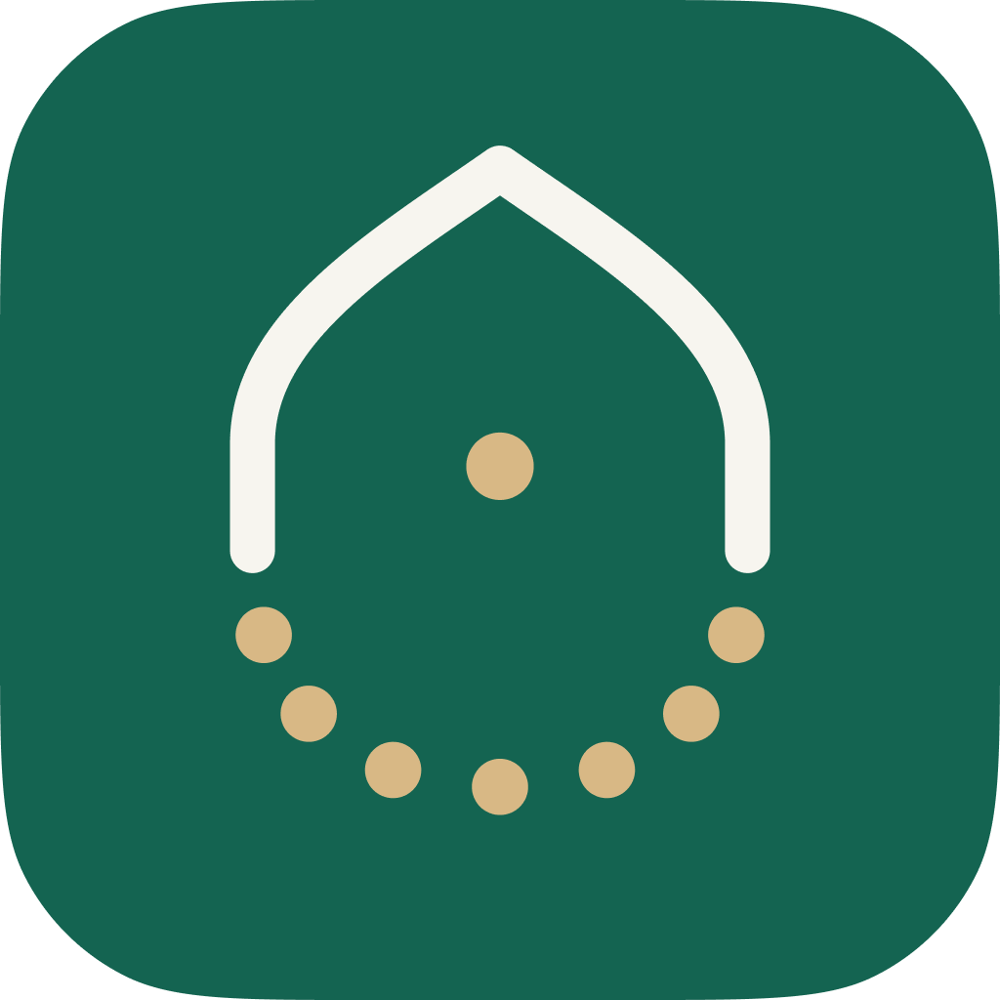

قراءة واستماع في تجربة واحدة
تصفّح المصحف بالرسم العثماني، وواصل وردك من حيث توقفت، واستمع إلى التلاوات دون مغادرة الصفحة.
القرآن الكريم، الأذكار، مواقيت الصلاة واتجاه القبلة في تجربة واحدة هادئة صُممت لترافقك دون أن تشتتك.

﴿ أَلَا بِذِكْرِ اللَّهِ تَطْمَئِنُّ الْقُلُوبُ ﴾
الرعد · ٢٨واجهة بسيطة تُقرّب المحتوى إليك، وتترك المساحة للمعنى.
أَصْبَحْنَا وَأَصْبَحَ الْمُلْكُ لِلَّهِ، وَالْحَمْدُ لِلَّهِ...
تصفّح المصحف بالرسم العثماني، وواصل وردك من حيث توقفت، واستمع إلى التلاوات دون مغادرة الصفحة.
مواقيت واضحة لمدينتك مع عدّ تنازلي للصلاة القادمة.
واجهة مركّزة تساعدك على معرفة اتجاه القبلة أينما كنت.
عداد تسبيح هادئ يحفظ تقدمك ويعينك على المداومة.
أذكار الصباح والمساء وأدعية المناسبات مرتّبة لتصل إليها بسهولة.
استمع إلى تلاوات مختارة بصوت القارئ مشاري راشد العفاسي، مع مشغّل واضح وتجربة هادئة.
صُمّم التطبيق ليخدم غاية واحدة: أن يجعل الوصول إلى القرآن والذِكر أسهل، دون إعلانات تجارية أو تتبع مزعج.
اقرأ سياسة الخصوصية ←كل المزايا متاحة دون اشتراك أو مشتريات داخل التطبيق.
لا نبيع بياناتك ولا نعرض إعلانات تجارية.
واجهة مباشرة تساعدك على الوصول إلى ما تريد سريعًا.
أهم ما قد تحتاج معرفته قبل تحميل التطبيق.
نعم، التطبيق مجاني بالكامل ولا يحتوي على إعلانات تجارية أو مشتريات داخلية.
يمكن استخدام أجزاء أساسية من المحتوى دون اتصال، بينما تحتاج بعض الخصائص مثل تنزيل التلاوات أو تحديث البيانات إلى الإنترنت.
يعتمد التطبيق على موقعك وطريقة الحساب المناسبة لإظهار المواقيت، ويمكنك مراجعة الإعدادات وفق مدينتك.
يمكنك تحميل النسخة الرسمية والموثوقة مباشرة من Google Play.
حمّل التطبيق مجانًا، وابدأ تجربة أكثر هدوءًا وقربًا.